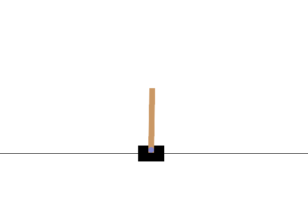

Deep Q-Network (DQN) - Cartpole Control Experiment
This project demonstrates a Deep Q-Network(DQN) applied to the Cartpole-v1 environment from the OpenAI Gym, where the goal is to balance a pole on a moving cart by learning optimal actions through trial and error. The objective is to explore and understand the principles of a deep learning environment, specifically the use of neural approximators for Q-learning.
Overview
This DQN combines Q-learning with deep neural networks, experience replay, and a target network to address the instability and divergence issues that arise when applying function approximation to reinforcement learning. The agent is passed information about the current state of the environment, which includes the position and velocity of the cart and pole, and learns to take either move left or right to keep the pole balanced. It does this by estimating the Q-value or estimated future rewards for each action of a given state and choosing the action with the highest estimated reward.
Implementation Details
- Environment: gymnasium.make("CartPole-v1")
- State: Continuous state vector for cart position, cart velocity, pole angle, and pole velocity at tip
- Action Space: Discrete (move left or right)
- Reward Signal: +1 for each time step the pole remains upright (max 500 steps)
- Exploration Strategy: Epsilon-greedy policy with exponential decay
Training procedure
At each step the agent:
- Selects an action based on the epsilon-greedy policy
- Executes the action and stores the resulting state
- Sample a random batch from the replay buffer
- Updates the Q-network weights via stochastic gradient descent
- Periodically sychronize weights to the target network
Evaluation
Performance is measured by average episode rewards over time. The environment is considered "sovled" when the mean reward execeeds 475 over 100 consecutive episodes (95% of total score of 500)
Actual State
Currently the model suffers from catastrophic forgetting where it will make progress in learning and have consecutive episodes with an average reward of 500. After more runs, it will rely on bad replays and reset learning progress. Currently there is leakage between the replay buffer and the main network that causes it to fail. In the future, I will implement a target network to address this issue and will also implement a more robust replay buffer that will not allow bad replays to be used for learning.